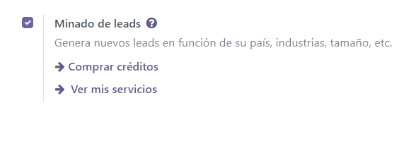
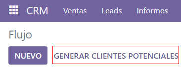
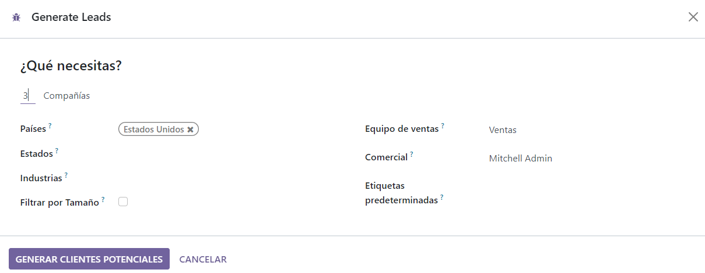
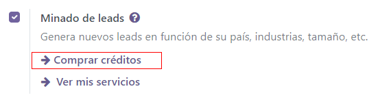
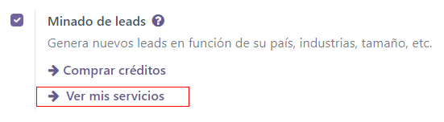

Lead mining¶
Lead mining is a feature that allows CRM users to generate new leads directly into their Odoo database. To ensure lead qualification, lead mining output is determined by a variety of filtering criteria, such as the country, the company size, and the industry.
Configuration¶
To get started, go to and activate Lead Mining.
Generate leads¶
After the Lead Mining setting is activated, a new button called Generate Leads is available to use in the CRM pipeline. Lead mining requests are also available through , or through where the Generate Leads button is also available.
Click on the Generate Leads button, and a window will appear offering a variety of criteria by which to generate leads.
Choose to generate leads for Companies to get company information only, or choose Companies and their Contacts to get company information as well as individual employee contact information. When targeting Companies and their Contacts, there is an option to filter contacts based on Role or Seniority.
Additional filtering options include:
Size: filter leads based on the number of employees at the company
Countries: filter leads based on the country (or countries) they are located in
States: further filter leads based on the state they are located in, if applicable
Industries: filter leads based on the specific industry they work in
Sales Team: choose which Sales Team the leads will be assigned to
Salesperson: choose which person(s) on the Sales Team the leads will be assigned to
Default Tags: choose which tags are applied directly to the leads once found
Note
Make sure to be aware of the latest EU regulations when receiving contact information. Get more information about the General Data Protection Regulation on Odoo GDPR.
Pricing¶
Lead mining is an In-App Purchase feature and each generated lead costs one credit.
Choosing to generate Companies and their Contacts costs one additional credit for each contact generated.
Note
See here for full pricing information: Lead Generation by Odoo IAP.
To buy credits, navigate to . In the Lead Generation section, under the Lead Mining feature, click on Buy Credits.
You can also purchase credits from the “view my services” option, you will be redirected to the same URL.
Note
Enterprise Odoo users with a valid subscription get free credits to test IAP features before deciding to purchase more credits for the database. This includes demo/training databases, educational databases, and one-app-free databases.
See also